← 回股市觀察
逐檔技術線型分析
2026/09/16 · 成交金額上市前 35 名 ＋ 上櫃前 15 名（共 50 檔）· 公開資料整理
45848.9
加權指數 +337.41 點（+0.74%）
統計範圍：當日成交金額上市前 35 名 ＋ 上櫃前 15 名（共 50 檔，皆為 4 位數代號的個股，不含 ETF／權證）。
兩個市場各自取前 N 名後合併呈現，卡片上標示市場別（上市／上櫃），清單也附市場分布。
條件統計：上市 上升趨勢：底底高 ＋ 頭頭高 6 檔、突破頸線 4 檔、跌破前低（線型轉弱） 9 檔、底底高 14 檔、頭頭高 11 檔、站上月線 14 檔、月線向上 18 檔、外資買超 15 檔、量價攻擊（收紅＋大量） 6 檔；上櫃 上升趨勢：底底高 ＋ 頭頭高 2 檔、突破頸線 7 檔、跌破前低（線型轉弱） 0 檔、底底高 4 檔、頭頭高 6 檔、站上月線 11 檔、月線向上 11 檔、外資買超 7 檔、量價攻擊（收紅＋大量） 8 檔。
五項全滿足（底底高＋頭頭高＋站上月線＋月線向上＋5 日線向上）：上市 聯電、臻鼎-KY；上櫃 信昌電、聯一光。
資料日 2026/09/16。籌碼：上市為證交所三大法人、上櫃為櫃買中心三大法人；上櫃另附融資餘額。
每一檔都附上 K 線圖與線型說明：黃圈是轉折低點、粉圈是轉折高點、藍線是月線；頸線取最近兩個轉折低點之間的最高轉折高點。
卡片的標籤可以點回上方對應清單，清單裡的股名也可以點到該檔。
本頁為公開資料（證交所每日收盤行情與三大法人、櫃買中心每日收盤行情與三大法人、Yahoo 股市日線）的整理與觀察，
不構成投資建議，不報牌、不預測、不下買賣決策。
好條件最多的（前 10）
不好條件最多的（前 10）
好條件（8 項）：站上月線、月線向上、底底高、頭頭高、突破頸線、相對大盤強、外資買超、量價攻擊（收紅＋大量）。
不好條件（8 項）：跌破前低、今日下跌、相對大盤弱、在月線之下、量增下跌（出貨）、外資賣超、月線下彎、收盤跌破前一日低點。
兩邊都是同一組資料（日線結構＋當日收盤量價籌碼）算出來的「符合項目數」，只是方向相反；
條件數不是評分、也不是推薦，不構成投資建議。
上升趨勢：底底高 ＋ 頭頭高（8 上市 6／上櫃 2）
量價攻擊（收紅＋大量）（14 上市 6／上櫃 8）
逐檔分析（50 檔）
底部墊高、未過前高 成交金額 498.13 億・全榜第 1 名（上市第 1 名）
好條件 2/8：月線向上、底底高
不好條件 5/8：今日下跌、相對大盤弱、在月線之下、量增下跌（出貨）、外資賣超
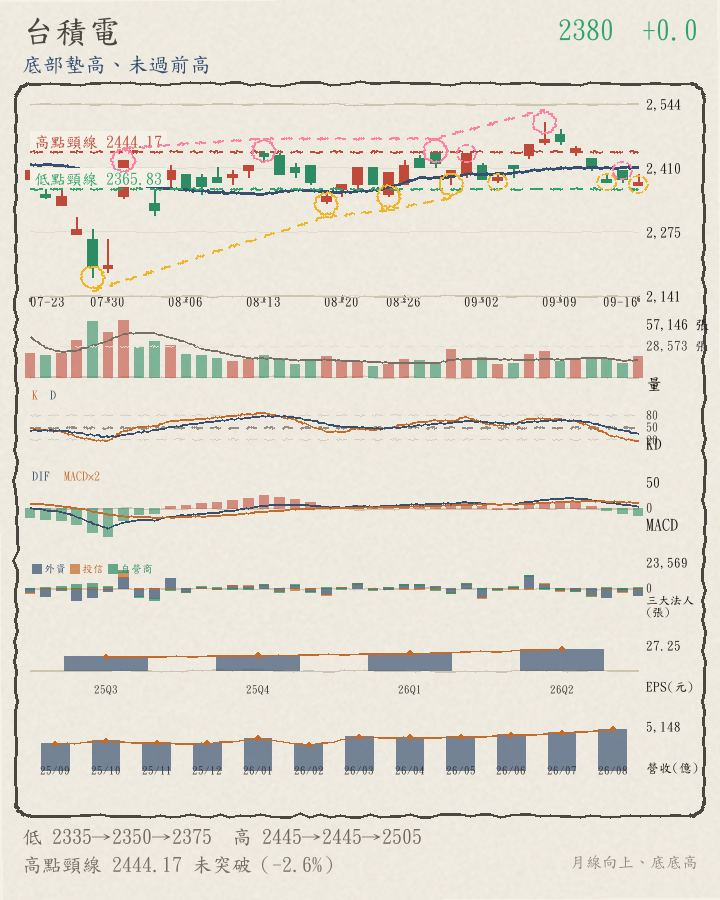
轉折低點 2335、2350、2375 遞增（底底高），但高點 2445、2445、2505 沒有同步創高，仍在區間內。頸線 2445（2026-08-28），收盤 2380 尚未突破，距離 -2.7%。收盤在月線 2411.75 之下。外資賣超 8,744 張、投信買超 167 張。最近的轉折：近 3 日最高 2405 還沒過前 3 日高點 2490、最低 2375 反而跌破前 3 日低點 2405。最近 3 個交易日收盤 09-14 2380 → 09-15 2385 → 09-16 2380。還沒確認的轉折低點 09-14 2380、09-16 2375（圖上虛線小圈）。還沒確認的轉折高點 09-01 2440、09-15 2405（圖上虛線小圈）。量比 1.21（1 為與 20 日均量相當）。
↑ 回上方清單
高點墊高、底部不穩 成交金額 302.18 億・全榜第 2 名（上市第 2 名）
好條件 6/8：站上月線、月線向上、頭頭高、突破頸線、相對大盤強、外資買超
不好條件 0/8：無
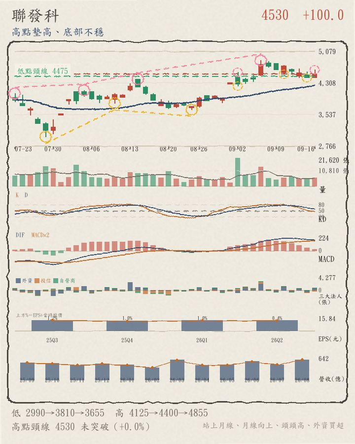
轉折高點 4125、4400、4855 遞增（頭頭高），但低點 2990、3810、3655 沒有同步墊高，底部結構不穩。收盤 4530 已站上頸線 4400（+3.0%），算是突破頸線。收盤在月線 4248.75 之上。外資買超 997 張、投信賣超 457 張。最近的轉折：近 3 日最高 4650 還沒過前 3 日高點 4780、最低 4430 反而跌破前 3 日低點 4520。最近 3 個交易日收盤 09-14 4560 → 09-15 4430 → 09-16 4530。還沒確認的轉折低點 09-10 4520、09-15 4430（圖上虛線小圈）。還沒確認的轉折高點 09-02 4565、09-16 4625（圖上虛線小圈）。量比 0.88（1 為與 20 日均量相當）。
↑ 回上方清單
上升趨勢（底底高＋頭頭高） 成交金額 199.12 億・全榜第 3 名（上市第 3 名）
好條件 3/8：月線向上、底底高、頭頭高
不好條件 6/8：今日下跌、相對大盤弱、在月線之下、量增下跌（出貨）、外資賣超、收盤跌破前一日低點
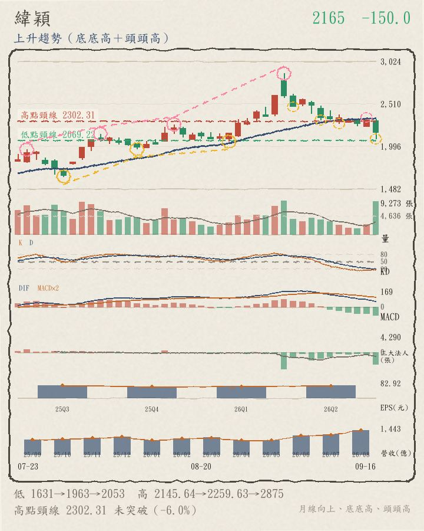
三個轉折低點 1631.02、1962.92、2053.44 遞增，三個轉折高點 2145.64、2259.63、2875 也遞增，屬於上升趨勢的骨架。頸線 2259.63（2026-08-17），收盤 2165 尚未突破，距離 -4.2%。收盤在月線 2333.28 之下。外資賣超 2,769 張、投信買超 214 張。最近的轉折：近 3 日最高 2345 還沒過前 3 日高點 2425、最低 2085 反而跌破前 3 日低點 2270。最近 3 個交易日收盤 09-14 2270 → 09-15 2315 → 09-16 2165。還沒確認的轉折低點 09-10 2270、09-16 2085（圖上虛線小圈）。還沒確認的轉折高點 09-15 2345（圖上虛線小圈）。量比 2.33（1 為與 20 日均量相當）。
↑ 回上方清單
底部墊高、未過前高 成交金額 181.52 億・全榜第 4 名（上市第 4 名）
好條件 3/8：底底高、相對大盤強、量價攻擊（收紅＋大量）
不好條件 4/8：跌破前低、在月線之下、外資賣超、月線下彎
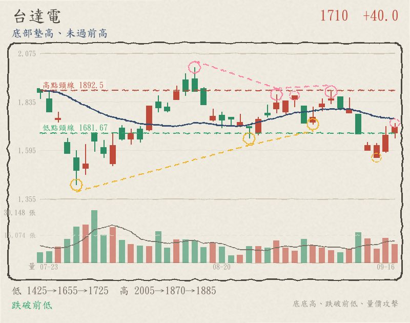
轉折低點 1425、1655、1725 遞增（底底高），但高點 2005、1870、1885 沒有同步創高，仍在區間內。收盤 1710 跌破前一個轉折低點，頸線 1870 還在更上方（-8.6%）。收盤在月線 1752.75 之下。外資賣超 844 張、投信買超 547 張。最近的轉折：近 3 日最高 1730 還沒過前 3 日高點 1855、最低 1560 反而跌破前 3 日低點 1595。最近 3 個交易日收盤 09-14 1620 → 09-15 1670 → 09-16 1710。還沒確認的轉折低點 09-14 1560（圖上虛線小圈）。還沒確認的轉折高點 09-01 1865、09-16 1730（圖上虛線小圈）。量比 1.12（1 為與 20 日均量相當）。
↑ 回上方清單
區間或轉弱 成交金額 176.82 億・全榜第 5 名（上市第 5 名）
好條件 2/8：相對大盤強、外資買超
不好條件 2/8：在月線之下、月線下彎
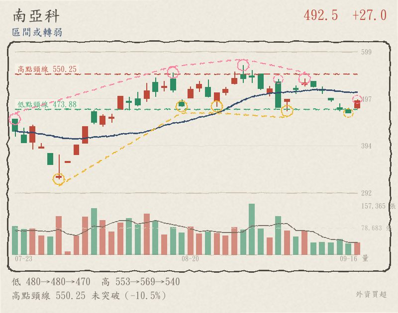
低點 480、480、470 與高點 553、569、540 都沒有明顯遞增，屬於區間震盪或轉弱。頸線 569（2026-08-28），收盤 492.5 尚未突破，距離 -13.4%。收盤在月線 510.825 之下。外資買超 6,508 張、投信買超 823 張。最近的轉折：近 3 日最高 495 還沒過前 3 日高點 535、最低 465.5 反而跌破前 3 日低點 490。最近 3 個交易日收盤 09-14 473 → 09-15 465.5 → 09-16 492.5。還沒確認的轉折低點 09-15 465.5（圖上虛線小圈）。還沒確認的轉折高點 09-03 539、09-16 495（圖上虛線小圈）。量比 0.53（1 為與 20 日均量相當）。
↑ 回上方清單
上升趨勢（底底高＋頭頭高） 成交金額 165.2 億・全榜第 6 名（上市第 6 名）
好條件 7/8：站上月線、月線向上、底底高、頭頭高、突破頸線、相對大盤強、外資買超
不好條件 0/8：無
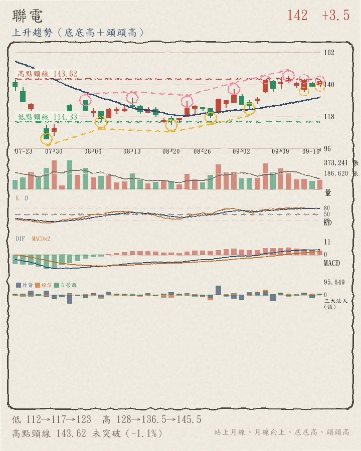
三個轉折低點 112、117、123 遞增，三個轉折高點 128、136.5、145.5 也遞增，屬於上升趨勢的骨架。收盤 142 已站上頸線 136.5（+4.0%），算是突破頸線。收盤在月線 131.125 之上。外資買超 6,969 張、投信買超 2,135 張。最近的轉折：近 3 日最高 143.5 還沒過前 3 日高點 145.5、最低 135 反而跌破前 3 日低點 137。最近 3 個交易日收盤 09-14 142.5 → 09-15 138.5 → 09-16 142。還沒確認的轉折低點 09-14 135、09-16 138（圖上虛線小圈）。還沒確認的轉折高點 09-14 143.5、09-16 142.5（圖上虛線小圈）。量比 0.69（1 為與 20 日均量相當）。
↑ 回上方清單
上升趨勢（底底高＋頭頭高） 成交金額 152.88 億・全榜第 8 名（上市第 7 名）
好條件 5/8：月線向上、底底高、頭頭高、相對大盤強、量價攻擊（收紅＋大量）
不好條件 3/8：跌破前低、在月線之下、外資賣超
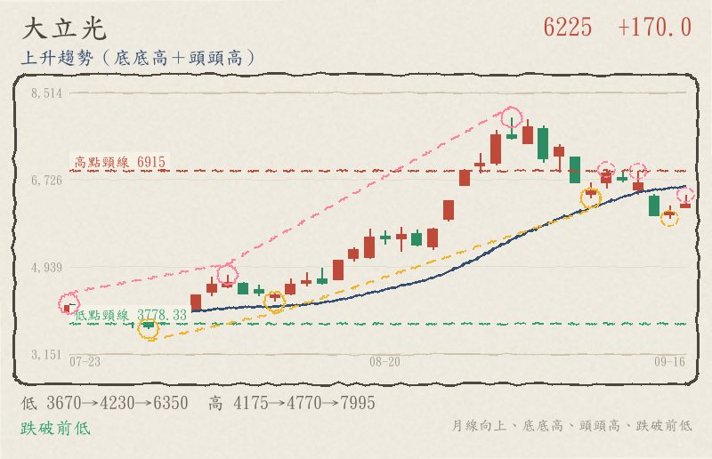
三個轉折低點 3670、4230、6350 遞增，三個轉折高點 4175、4770、7995 也遞增，屬於上升趨勢的骨架。收盤 6225 跌破前一個轉折低點，頸線 7995 還在更上方（-22.1%）。收盤在月線 6588.75 之下。外資賣超 19 張、投信賣超 38 張。最近的轉折：近 3 日最高 6420 還沒過前 3 日高點 6930、最低 5930 反而跌破前 3 日低點 6420。最近 3 個交易日收盤 09-14 5995 → 09-15 6055 → 09-16 6225。還沒確認的轉折低點 09-15 5930（圖上虛線小圈）。還沒確認的轉折高點 09-11 6900、09-16 6415（圖上虛線小圈）。量比 1.01（1 為與 20 日均量相當）。
↑ 回上方清單
區間或轉弱 成交金額 148.62 億・全榜第 9 名（上市第 8 名）
好條件 0/8：無
不好條件 5/8：今日下跌、相對大盤弱、在月線之下、外資賣超、月線下彎
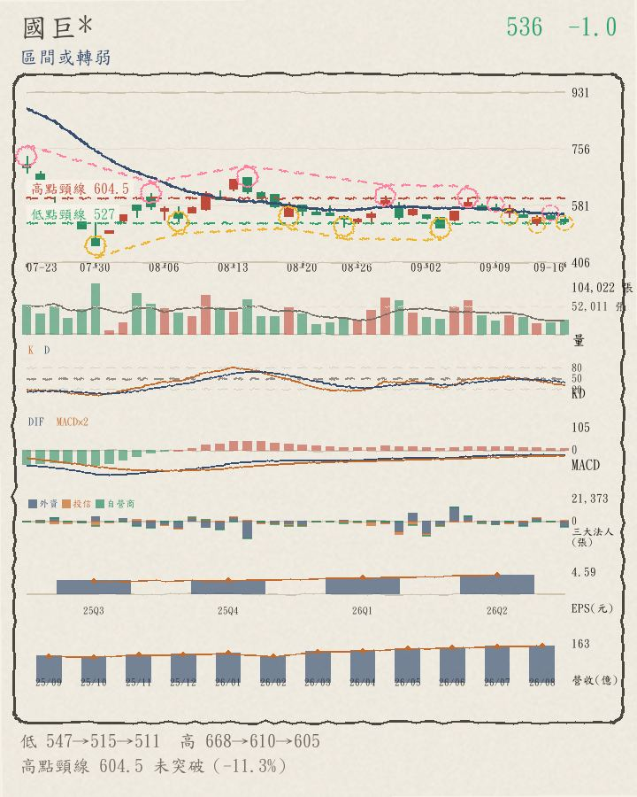
低點 547、515、511 與高點 668、610、605 都沒有明顯遞增，屬於區間震盪或轉弱。頸線 610（2026-08-28），收盤 536 尚未突破，距離 -12.1%。收盤在月線 554.05 之下。外資賣超 6,397 張、投信買超 357 張。最近的轉折：近 3 日最高 558 還沒過前 3 日高點 585、最低 520 反而跌破前 3 日低點 543。最近 3 個交易日收盤 09-14 545 → 09-15 537 → 09-16 536。還沒確認的轉折低點 09-14 520、09-16 526（圖上虛線小圈）。還沒確認的轉折高點 09-09 585、09-15 558（圖上虛線小圈）。量比 0.7（1 為與 20 日均量相當）。
↑ 回上方清單
區間或轉弱 成交金額 138.92 億・全榜第 10 名（上市第 9 名）
好條件 2/8：相對大盤強、外資買超
不好條件 2/8：在月線之下、月線下彎
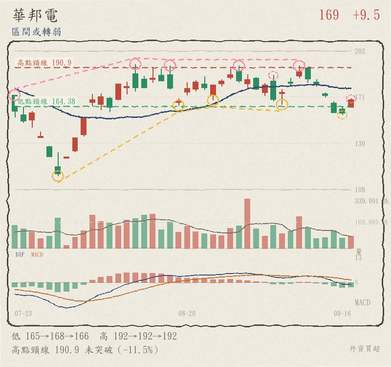
低點 165、168.5、165.5 與高點 192、192、192 都沒有明顯遞增，屬於區間震盪或轉弱。頸線 192（2026-08-28），收盤 169 尚未突破，距離 -12.0%。收盤在月線 176.675 之下。外資買超 18,474 張、投信買超 177 張。最近的轉折：近 3 日最高 169.5 還沒過前 3 日高點 190.5、最低 158.5 反而跌破前 3 日低點 170.5。最近 3 個交易日收盤 09-14 160 → 09-15 159.5 → 09-16 169。還沒確認的轉折低點 09-15 158.5（圖上虛線小圈）。還沒確認的轉折高點 09-03 185.5、09-16 169.5（圖上虛線小圈）。量比 0.64（1 為與 20 日均量相當）。
↑ 回上方清單
區間或轉弱 成交金額 114.24 億・全榜第 13 名（上市第 10 名）
好條件 4/8：站上月線、月線向上、相對大盤強、量價攻擊（收紅＋大量）
不好條件 1/8：外資賣超
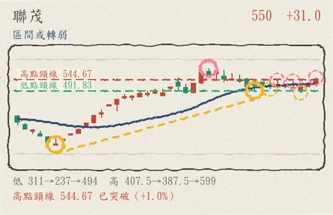
低點 311、237、493.5 與高點 407.5、387.5、599 都沒有明顯遞增，屬於區間震盪或轉弱。頸線 599（2026-08-27），收盤 550 尚未突破，距離 -8.2%。收盤在月線 529.225 之上。外資賣超 78 張、投信買超 512 張。最近的轉折：近 3 日最高 555 已越過前 3 日高點 542、最低 482 反而跌破前 3 日低點 501。最近 3 個交易日收盤 09-14 515 → 09-15 519 → 09-16 550。還沒確認的轉折低點 09-08 500、09-14 482（圖上虛線小圈）。還沒確認的轉折高點 09-11 537、09-16 555（圖上虛線小圈）。量比 1.27（1 為與 20 日均量相當）。
↑ 回上方清單
區間或轉弱 成交金額 113.35 億・全榜第 14 名（上市第 11 名）
好條件 1/8：相對大盤強
不好條件 3/8：在月線之下、外資賣超、月線下彎
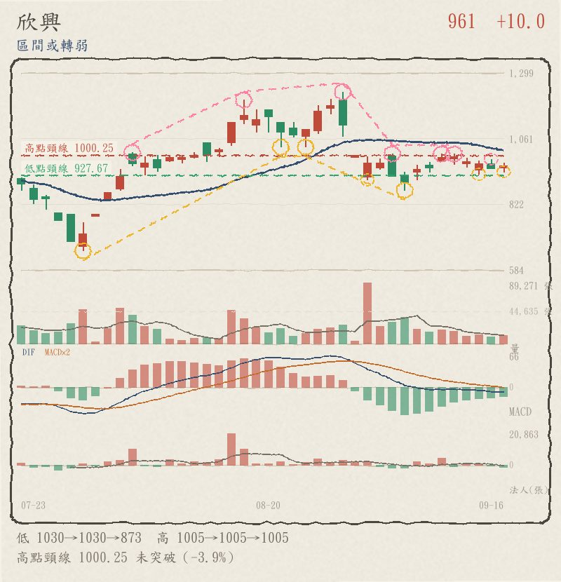
低點 1030、1030、873 與高點 1005、1005、1005 都沒有明顯遞增，屬於區間震盪或轉弱。頸線 1230（2026-08-28），收盤 961 尚未突破，距離 -21.9%。收盤在月線 1018.1 之下。外資賣超 1,302 張、投信賣超 169 張。最近的轉折：近 3 日最高 986 還沒過前 3 日高點 1005、最低 932 反而跌破前 3 日低點 958。最近 3 個交易日收盤 09-14 970 → 09-15 951 → 09-16 961。還沒確認的轉折低點 09-14 932、09-16 940（圖上虛線小圈）。還沒確認的轉折高點 09-15 986（圖上虛線小圈）。量比 0.5（1 為與 20 日均量相當）。
↑ 回上方清單
底部墊高、未過前高 成交金額 108.98 億・全榜第 15 名（上市第 12 名）
好條件 4/8：站上月線、月線向上、底底高、相對大盤強
不好條件 1/8：外資賣超
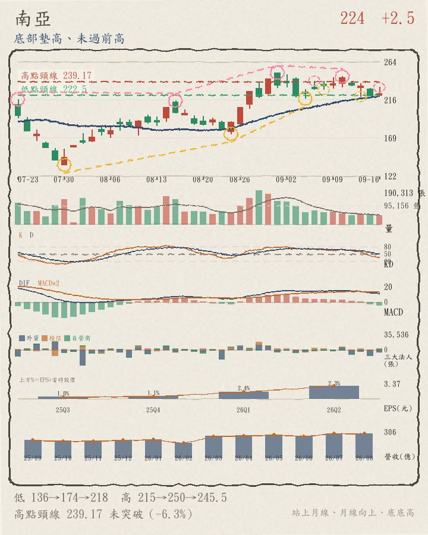
轉折低點 135.5、174、218 遞增（底底高），但高點 215、250、245.5 沒有同步創高，仍在區間內。頸線 250（2026-09-01），收盤 224 尚未突破，距離 -10.4%。收盤在月線 221.125 之上。外資賣超 6,798 張、投信買超 2,715 張。最近的轉折：近 3 日最高 236.5 還沒過前 3 日高點 245.5、最低 220.5 反而跌破前 3 日低點 231。最近 3 個交易日收盤 09-14 234 → 09-15 221.5 → 09-16 224。還沒確認的轉折低點 09-08 229、09-14 220.5（圖上虛線小圈）。還沒確認的轉折高點 09-07 240、09-16 232（圖上虛線小圈）。量比 0.54（1 為與 20 日均量相當）。
↑ 回上方清單
臻鼎-KY 4958 上市
493.5 +16.0
上升趨勢（底底高＋頭頭高） 成交金額 106.25 億・全榜第 16 名（上市第 13 名）
好條件 6/8：站上月線、月線向上、底底高、頭頭高、相對大盤強、外資買超
不好條件 0/8：無
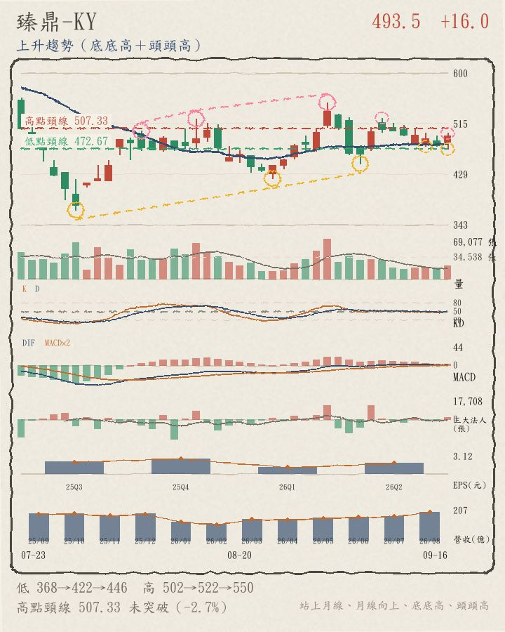
三個轉折低點 368、421.5、446.5 遞增，三個轉折高點 502、522、550 也遞增，屬於上升趨勢的骨架。頸線 550（2026-09-01），收盤 493.5 尚未突破，距離 -10.3%。收盤在月線 481.05 之上。外資買超 1,779 張、投信買超 334 張。最近的轉折：近 3 日最高 498 還沒過前 3 日高點 515、最低 471 反而跌破前 3 日低點 478。最近 3 個交易日收盤 09-14 489.5 → 09-15 477.5 → 09-16 493.5。還沒確認的轉折低點 09-14 475.5、09-16 471（圖上虛線小圈）。還沒確認的轉折高點 09-08 524、09-16 498（圖上虛線小圈）。量比 0.8（1 為與 20 日均量相當）。
↑ 回上方清單
底部墊高、未過前高 成交金額 102.52 億・全榜第 17 名（上市第 14 名）
好條件 3/8：站上月線、月線向上、底底高
不好條件 4/8：今日下跌、相對大盤弱、量增下跌（出貨）、外資賣超
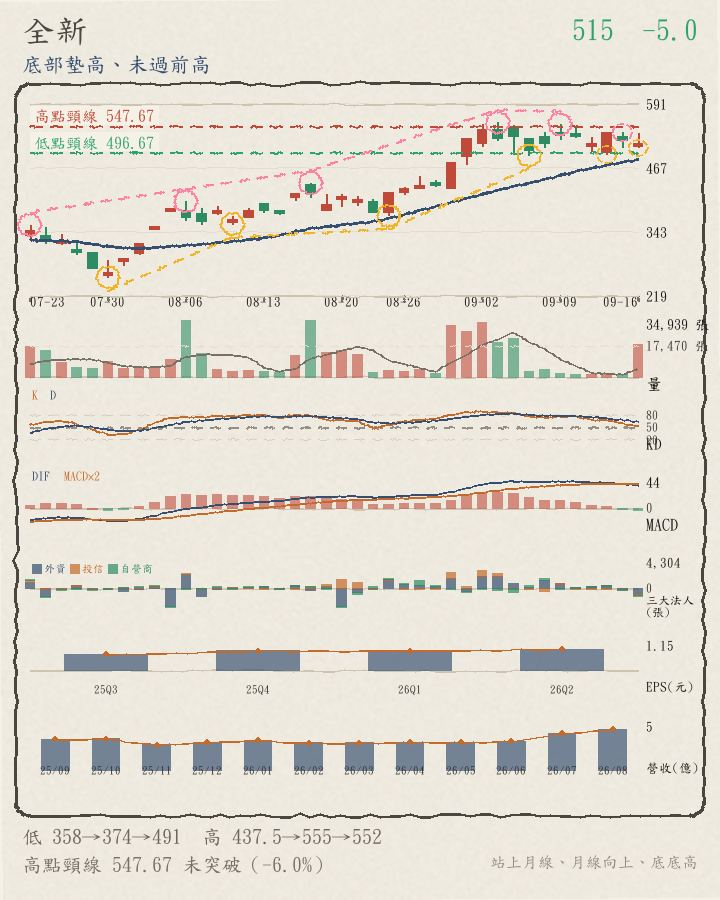
轉折低點 358.5、374.5、491 遞增（底底高），但高點 437.5、555、552 沒有同步創高，仍在區間內。頸線 555（2026-09-03），收盤 515 尚未突破，距離 -7.2%。收盤在月線 483.75 之上。外資賣超 1,483 張、投信賣超 118 張。最近的轉折：近 3 日最高 536 還沒過前 3 日高點 552、最低 493 反而跌破前 3 日低點 499.5。最近 3 個交易日收盤 09-14 535 → 09-15 520 → 09-16 515。還沒確認的轉折低點 09-14 493、09-16 506（圖上虛線小圈）。還沒確認的轉折高點 09-15 536（圖上虛線小圈）。量比 1.82（1 為與 20 日均量相當）。
↑ 回上方清單
高點墊高、底部不穩 成交金額 101.59 億・全榜第 18 名（上市第 15 名）
好條件 7/8：站上月線、月線向上、頭頭高、突破頸線、相對大盤強、外資買超、量價攻擊（收紅＋大量）
不好條件 0/8：無
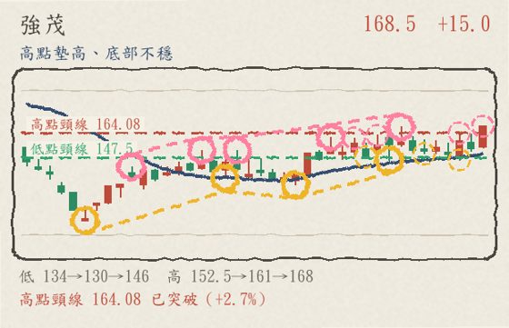
轉折高點 152.5、161、168 遞增（頭頭高），但低點 134、129.5、146 沒有同步墊高，底部結構不穩。收盤 168.5 已站上頸線 161（+4.7%），算是突破頸線。收盤在月線 150.475 之上。外資買超 9,277 張、投信買超 3,762 張。最近的轉折：近 3 日最高 168.5 已越過前 3 日高點 159.5、最低 146 反而跌破前 3 日低點 149。最近 3 個交易日收盤 09-14 159 → 09-15 153.5 → 09-16 168.5。還沒確認的轉折低點 09-09 150、09-14 146（圖上虛線小圈）。還沒確認的轉折高點 09-14 164、09-16 168.5（圖上虛線小圈）。量比 1.67（1 為與 20 日均量相當）。
↑ 回上方清單
區間或轉弱 成交金額 89.09 億・全榜第 21 名（上市第 16 名）
好條件 1/8：相對大盤強
不好條件 3/8：在月線之下、外資賣超、月線下彎
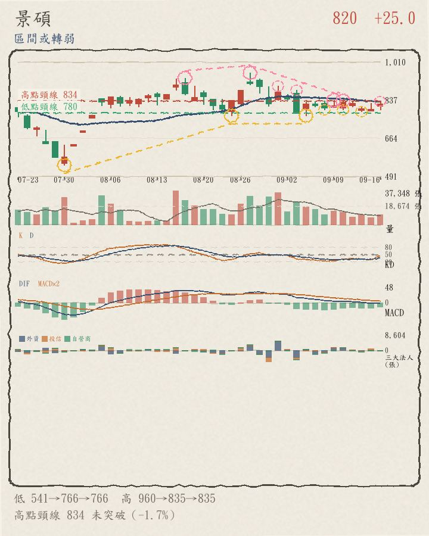
低點 541、766、766 與高點 960、835、835 都沒有明顯遞增，屬於區間震盪或轉弱。頸線 960（2026-08-27），收盤 820 尚未突破，距離 -14.6%。收盤在月線 830.3 之下。外資賣超 20 張、投信買超 151 張。最近的轉折：近 3 日最高 832 還沒過前 3 日高點 835、最低 784 反而跌破前 3 日低點 792。最近 3 個交易日收盤 09-14 798 → 09-15 795 → 09-16 820。還沒確認的轉折低點 09-10 792、09-14 784（圖上虛線小圈）。還沒確認的轉折高點 09-03 882、09-16 832（圖上虛線小圈）。量比 0.61（1 為與 20 日均量相當）。
↑ 回上方清單
上升趨勢（底底高＋頭頭高） 成交金額 86.92 億・全榜第 22 名（上市第 17 名）
好條件 4/8：月線向上、底底高、頭頭高、相對大盤強
不好條件 3/8：跌破前低、在月線之下、外資賣超
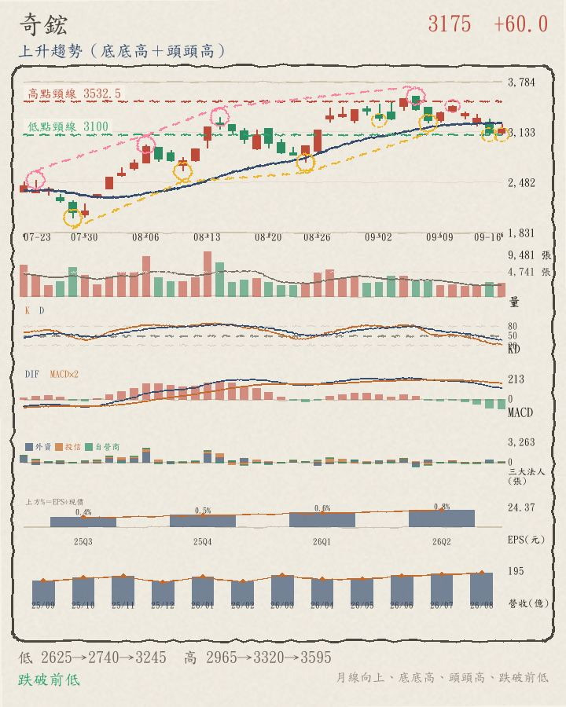
三個轉折低點 2625、2740、3245 遞增，三個轉折高點 2965、3320、3595 也遞增，屬於上升趨勢的骨架。收盤 3175 跌破前一個轉折低點，頸線 3595 還在更上方（-11.7%）。收盤在月線 3252 之下。外資賣超 200 張、投信買超 80 張。最近的轉折：近 3 日最高 3360 還沒過前 3 日高點 3470、最低 3100 反而跌破前 3 日低點 3265。最近 3 個交易日收盤 09-14 3310 → 09-15 3115 → 09-16 3175。還沒確認的轉折低點 09-15 3100、09-16 3100（圖上虛線小圈）。還沒確認的轉折高點 09-10 3470（圖上虛線小圈）。量比 0.84（1 為與 20 日均量相當）。
↑ 回上方清單
區間或轉弱 成交金額 86.77 億・全榜第 23 名（上市第 18 名）
好條件 2/8：相對大盤強、外資買超
不好條件 2/8：在月線之下、月線下彎
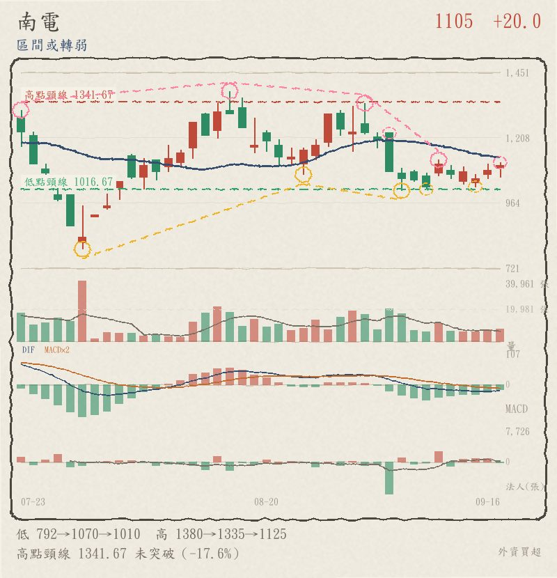
低點 792、1070、1010 與高點 1380、1335、1125 都沒有明顯遞增，屬於區間震盪或轉弱。頸線 1335（2026-09-01），收盤 1105 尚未突破，距離 -17.2%。收盤在月線 1135.5 之下。外資買超 78 張、投信買超 5 張。最近的轉折：近 3 日最高 1115 還沒過前 3 日高點 1125、最低 1025 反而跌破前 3 日低點 1035。最近 3 個交易日收盤 09-14 1055 → 09-15 1085 → 09-16 1105。還沒確認的轉折低點 09-08 1015、09-14 1025（圖上虛線小圈）。還沒確認的轉折高點 09-03 1225、09-16 1115（圖上虛線小圈）。量比 0.71（1 為與 20 日均量相當）。
↑ 回上方清單
底部墊高、未過前高 成交金額 85.91 億・全榜第 24 名（上市第 19 名）
好條件 3/8：月線向上、底底高、外資買超
不好條件 5/8：跌破前低、今日下跌、相對大盤弱、在月線之下、量增下跌（出貨）
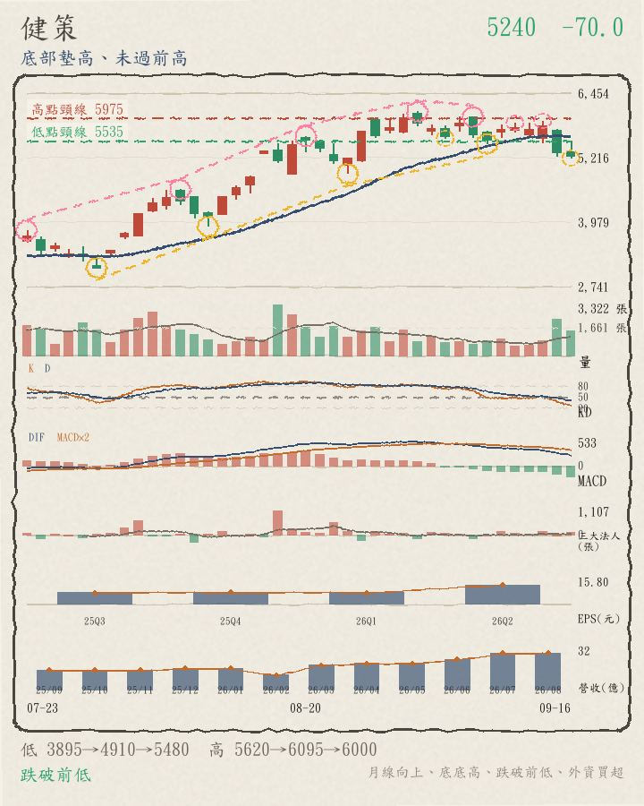
轉折低點 3895、4910、5480 遞增（底底高），但高點 5620、6095、6000 沒有同步創高，仍在區間內。收盤 5240 跌破前一個轉折低點，頸線 6095 還在更上方（-14.0%）。收盤在月線 5626.75 之下。外資買超 176 張、投信賣超 102 張。最近的轉折：近 3 日最高 5920 已越過前 3 日高點 5885、最低 5210 反而跌破前 3 日低點 5600。最近 3 個交易日收盤 09-14 5820 → 09-15 5310 → 09-16 5240。還沒確認的轉折低點 09-03 5590、09-16 5210（圖上虛線小圈）。還沒確認的轉折高點 09-10 5885、09-14 5920（圖上虛線小圈）。量比 1.24（1 為與 20 日均量相當）。
↑ 回上方清單
區間或轉弱 成交金額 85.85 億・全榜第 25 名（上市第 20 名）
好條件 1/8：外資買超
不好條件 6/8：跌破前低、今日下跌、相對大盤弱、在月線之下、月線下彎、收盤跌破前一日低點
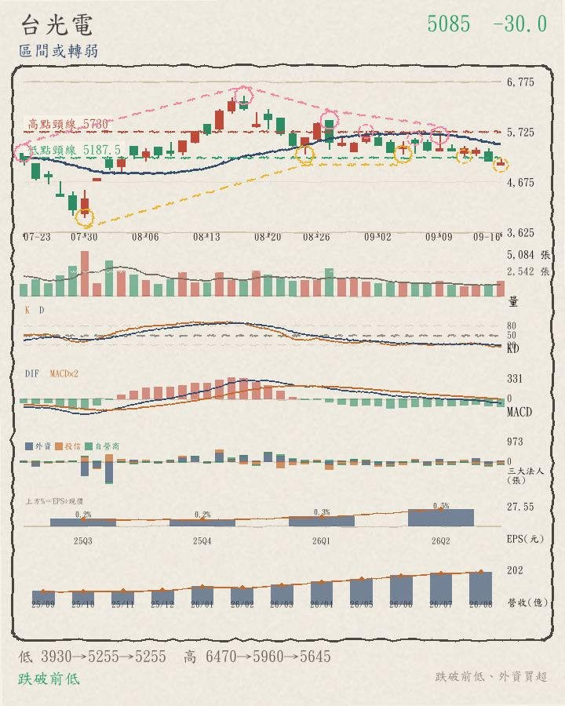
低點 3930、5255、5255 與高點 6470、5960、5645 都沒有明顯遞增，屬於區間震盪或轉弱。收盤 5085 跌破前一個轉折低點，頸線 5960 還在更上方（-14.7%）。收盤在月線 5467.25 之下。外資買超 68 張、投信賣超 147 張。最近的轉折：近 3 日最高 5395 還沒過前 3 日高點 5645、最低 5030 反而跌破前 3 日低點 5210。最近 3 個交易日收盤 09-14 5345 → 09-15 5115 → 09-16 5085。還沒確認的轉折低點 09-11 5210、09-16 5030（圖上虛線小圈）。還沒確認的轉折高點 09-01 5735、09-07 5580（圖上虛線小圈）。量比 0.98（1 為與 20 日均量相當）。
↑ 回上方清單
高點墊高、底部不穩 成交金額 77.88 億・全榜第 27 名（上市第 21 名）
好條件 4/8：站上月線、月線向上、頭頭高、相對大盤強
不好條件 1/8：外資賣超
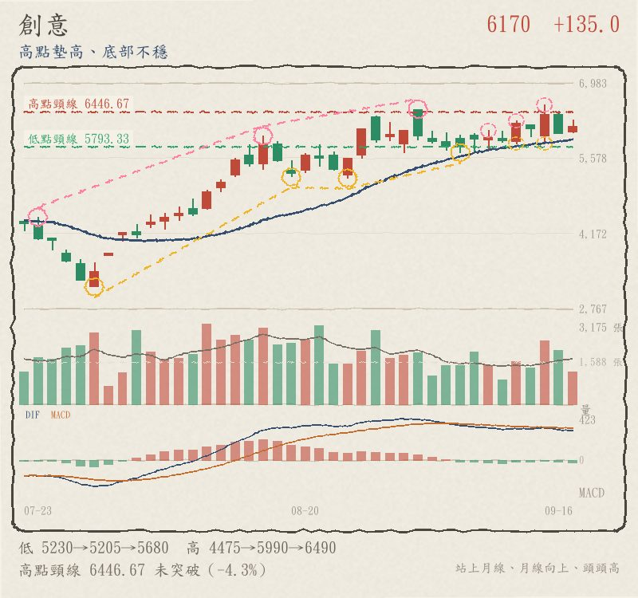
轉折高點 4475、5990、6490 遞增（頭頭高），但低點 5230、5205、5680 沒有同步墊高，底部結構不穩。頸線 6490（2026-09-01），收盤 6170 尚未突破，距離 -4.9%。收盤在月線 5929.75 之上。外資賣超 15 張、投信買超 31 張。最近的轉折：近 3 日最高 6575 已越過前 3 日高點 6275、最低 5850 反而跌破前 3 日低點 5850。最近 3 個交易日收盤 09-14 6400 → 09-15 6035 → 09-16 6170。還沒確認的轉折低點 09-10 5850、09-14 5850（圖上虛線小圈）。還沒確認的轉折高點 09-10 6275、09-14 6575（圖上虛線小圈）。量比 0.66（1 為與 20 日均量相當）。
↑ 回上方清單
區間或轉弱 成交金額 76.2 億・全榜第 28 名（上市第 22 名）
好條件 5/8：站上月線、月線向上、相對大盤強、外資買超、量價攻擊（收紅＋大量）
不好條件 0/8：無
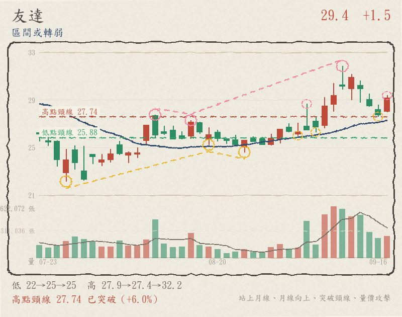
低點 22、25.25、24.6 與高點 27.9、27.4、32.2 都沒有明顯遞增，屬於區間震盪或轉弱。頸線 32.2（2026-09-09），收盤 29.4 尚未突破，距離 -8.7%。收盤在月線 27.395 之上。外資買超 52,473 張、投信買超 4 張。最近的轉折：近 3 日最高 29.75 還沒過前 3 日高點 32.2、最低 27.75 反而跌破前 3 日低點 29。最近 3 個交易日收盤 09-14 28.7 → 09-15 27.9 → 09-16 29.4。還沒確認的轉折低點 09-04 26.35、09-15 27.75（圖上虛線小圈）。還沒確認的轉折高點 09-03 28.85、09-16 29.6（圖上虛線小圈）。量比 1.05（1 為與 20 日均量相當）。
↑ 回上方清單
區間或轉弱 成交金額 66.82 億・全榜第 29 名（上市第 23 名）
好條件 0/8：無
不好條件 6/8：跌破前低、今日下跌、相對大盤弱、在月線之下、外資賣超、月線下彎
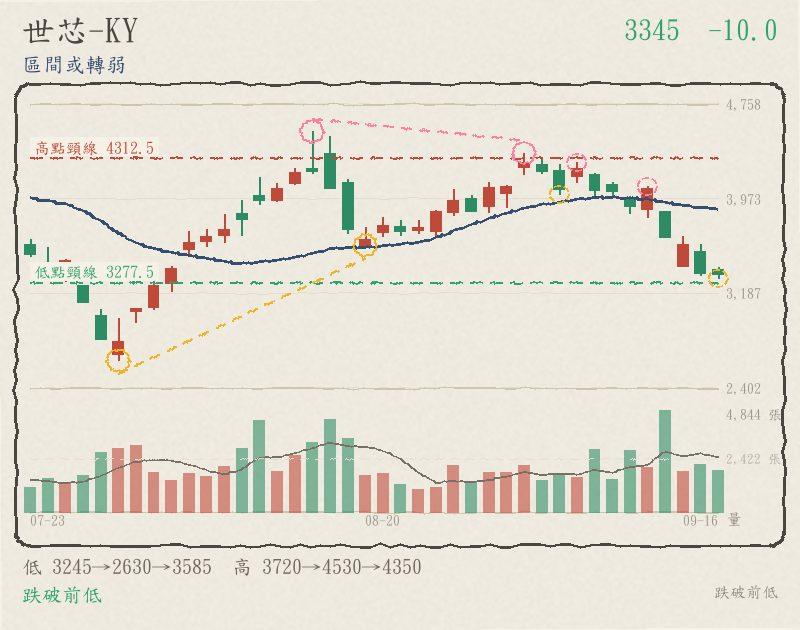
低點 3245、2630、3585 與高點 3720、4530、4350 都沒有明顯遞增，屬於區間震盪或轉弱。收盤 3345 跌破前一個轉折低點，頸線 4530 還在更上方（-26.2%）。收盤在月線 3886.75 之下。外資賣超 441 張、投信賣超 36 張。最近的轉折：近 3 日最高 3655 還沒過前 3 日高點 4075、最低 3310 反而跌破前 3 日低點 3650。最近 3 個交易日收盤 09-14 3590 → 09-15 3355 → 09-16 3345。還沒確認的轉折低點 09-03 4010、09-16 3310（圖上虛線小圈）。還沒確認的轉折高點 09-04 4275、09-10 4075（圖上虛線小圈）。量比 0.99（1 為與 20 日均量相當）。
↑ 回上方清單
上升趨勢（底底高＋頭頭高） 成交金額 63.66 億・全榜第 30 名（上市第 24 名）
好條件 4/8：底底高、頭頭高、相對大盤強、外資買超
不好條件 2/8：在月線之下、月線下彎
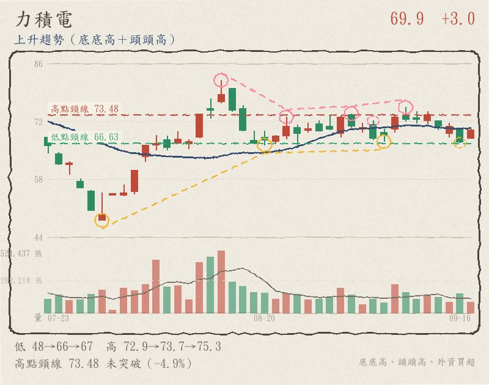
三個轉折低點 48、66.2、67 遞增，三個轉折高點 72.9、73.7、75.3 也遞增，屬於上升趨勢的骨架。頸線 73.7（2026-09-01），收盤 69.9 尚未突破，距離 -5.2%。收盤在月線 70.26 之下。外資買超 42,641 張、投信買超 423 張。最近的轉折：近 3 日最高 71.4 還沒過前 3 日高點 74.3、最低 66.7 反而跌破前 3 日低點 69.8。最近 3 個交易日收盤 09-14 70.7 → 09-15 66.9 → 09-16 69.9。還沒確認的轉折低點 09-15 66.7（圖上虛線小圈）。還沒確認的轉折高點 09-03 72（圖上虛線小圈）。量比 0.66（1 為與 20 日均量相當）。
↑ 回上方清單
高點墊高、底部不穩 成交金額 60.62 億・全榜第 32 名（上市第 25 名）
好條件 5/8：站上月線、月線向上、頭頭高、相對大盤強、外資買超
不好條件 0/8：無
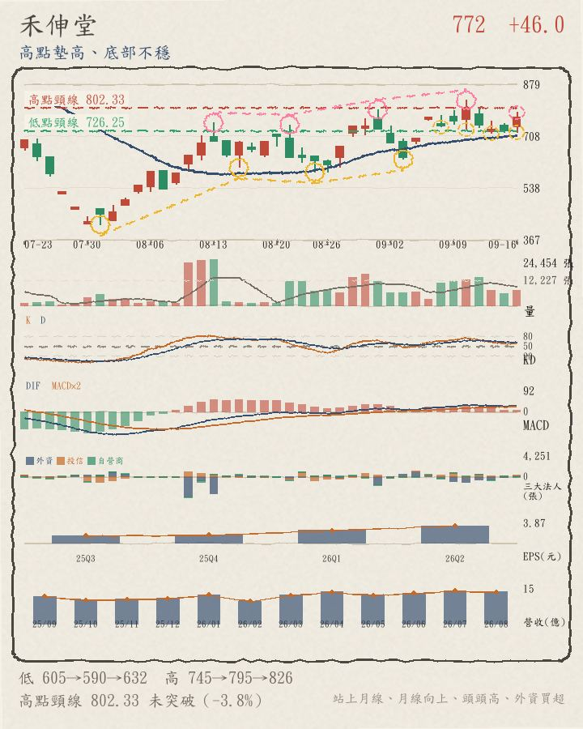
轉折高點 745、795、826 遞增（頭頭高），但低點 605、590、632 沒有同步墊高，底部結構不穩。頸線 795（2026-09-01），收盤 772 尚未突破，距離 -2.9%。收盤在月線 710.05 之上。外資買超 126 張、投信買超 256 張。最近的轉折：近 3 日最高 786 還沒過前 3 日高點 826、最低 717 反而跌破前 3 日低點 730。最近 3 個交易日收盤 09-14 731 → 09-15 726 → 09-16 772。還沒確認的轉折低點 09-14 717、09-16 720（圖上虛線小圈）。還沒確認的轉折高點 09-16 786（圖上虛線小圈）。量比 0.87（1 為與 20 日均量相當）。
↑ 回上方清單
區間或轉弱 成交金額 59.68 億・全榜第 34 名（上市第 26 名）
好條件 0/8：無
不好條件 4/8：相對大盤弱、在月線之下、外資賣超、月線下彎
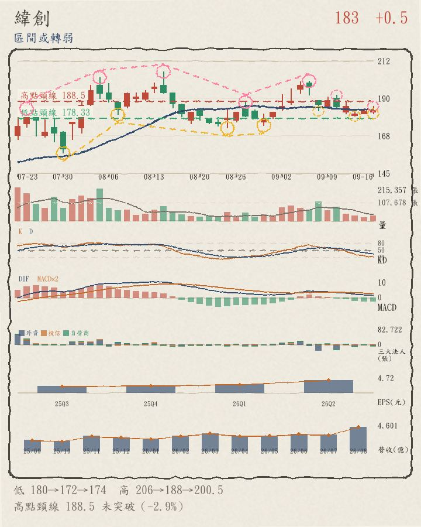
低點 180.5、172.5、174 與高點 206、188、200.5 都沒有明顯遞增，屬於區間震盪或轉弱。頸線 188（2026-08-27），收盤 183 尚未突破，距離 -2.7%。收盤在月線 183.525 之下。外資賣超 9,687 張、投信買超 1,993 張。最近的轉折：近 3 日最高 185.5 還沒過前 3 日高點 192、最低 179.5 反而跌破前 3 日低點 181。最近 3 個交易日收盤 09-14 181 → 09-15 182.5 → 09-16 183。還沒確認的轉折低點 09-14 179.5、09-16 181（圖上虛線小圈）。還沒確認的轉折高點 09-10 192、09-16 185.5（圖上虛線小圈）。量比 0.64（1 為與 20 日均量相當）。
↑ 回上方清單
區間或轉弱 成交金額 57.43 億・全榜第 35 名（上市第 27 名）
好條件 4/8：站上月線、月線向上、相對大盤強、外資買超
不好條件 0/8：無
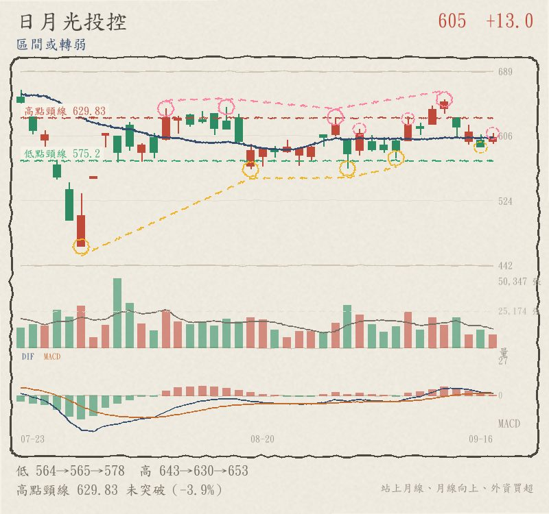
低點 564、565、578 與高點 643、630、653 都沒有明顯遞增，屬於區間震盪或轉弱。頸線 653（2026-09-10），收盤 605 尚未突破，距離 -7.4%。收盤在月線 604.7 之上。外資買超 2,606 張、投信賣超 1,038 張。最近的轉折：近 3 日最高 620 還沒過前 3 日高點 653、最低 592 反而跌破前 3 日低點 605。最近 3 個交易日收盤 09-14 612 → 09-15 592 → 09-16 605。還沒確認的轉折低點 09-15 592（圖上虛線小圈）。還沒確認的轉折高點 09-07 628、09-16 610（圖上虛線小圈）。量比 0.55（1 為與 20 日均量相當）。
↑ 回上方清單
底部墊高、未過前高 成交金額 57.4 億・全榜第 36 名（上市第 28 名）
好條件 5/8：站上月線、月線向上、底底高、相對大盤強、量價攻擊（收紅＋大量）
不好條件 1/8：外資賣超
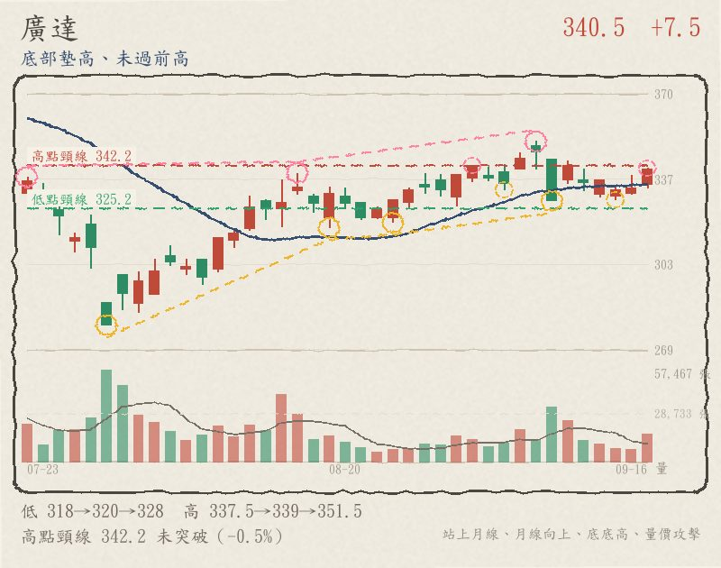
轉折低點 317.5、319.5、328 遞增（底底高），但高點 337.5、339、351.5 沒有同步創高，仍在區間內。頸線 351.5（2026-09-07），收盤 340.5 尚未突破，距離 -3.1%。收盤在月線 334.7 之上。外資賣超 158 張、投信買超 3,775 張。最近的轉折：近 3 日最高 341 還沒過前 3 日高點 344、最低 328.5 反而跌破前 3 日低點 329.5。最近 3 個交易日收盤 09-14 332.5 → 09-15 333 → 09-16 340.5。還沒確認的轉折低點 09-03 332.5、09-14 328.5（圖上虛線小圈）。還沒確認的轉折高點 09-01 342、09-16 341（圖上虛線小圈）。量比 1.29（1 為與 20 日均量相當）。
↑ 回上方清單
區間或轉弱 成交金額 57.35 億・全榜第 37 名（上市第 29 名）
好條件 0/8：無
不好條件 5/8：跌破前低、相對大盤弱、在月線之下、外資賣超、月線下彎
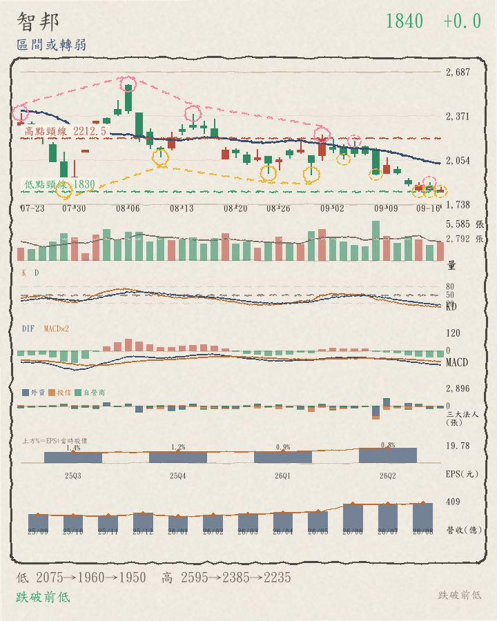
低點 2075、1960、1950 與高點 2595、2385、2235 都沒有明顯遞增，屬於區間震盪或轉弱。收盤 1840 跌破前一個轉折低點，頸線 2235 還在更上方（-17.7%）。收盤在月線 2027.75 之下。外資賣超 258 張、投信賣超 129 張。最近的轉折：近 3 日最高 1895 還沒過前 3 日高點 2070、最低 1830 反而跌破前 3 日低點 1870。最近 3 個交易日收盤 09-14 1875 → 09-15 1840 → 09-16 1840。還沒確認的轉折低點 09-15 1830、09-16 1830（圖上虛線小圈）。還沒確認的轉折高點 09-04 2190、09-15 1895（圖上虛線小圈）。量比 0.84（1 為與 20 日均量相當）。
↑ 回上方清單
區間或轉弱 成交金額 55.24 億・全榜第 38 名（上市第 30 名）
好條件 1/8：相對大盤強
不好條件 4/8：跌破前低、在月線之下、外資賣超、月線下彎
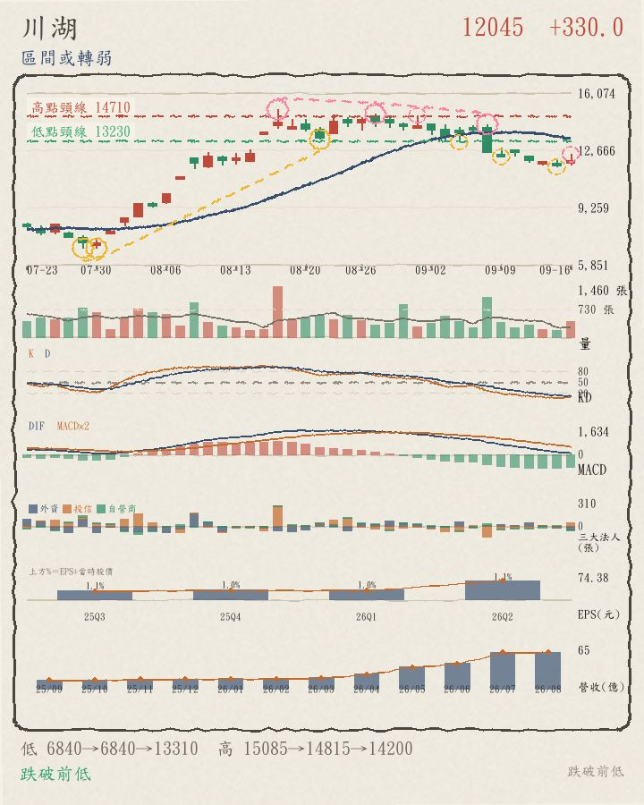
低點 6840、6840、13310 與高點 15085、14815、14200 都沒有明顯遞增，屬於區間震盪或轉弱。收盤 12045 跌破前一個轉折低點，頸線 15085 還在更上方（-20.2%）。收盤在月線 13395.8 之下。外資賣超 63 張、投信買超 59 張。最近的轉折：近 3 日最高 12445 還沒過前 3 日高點 12785、最低 11665 反而跌破前 3 日低點 11950。最近 3 個交易日收盤 09-14 11990 → 09-15 11715 → 09-16 12045。還沒確認的轉折低點 09-09 12285、09-15 11665（圖上虛線小圈）。還沒確認的轉折高點 09-01 14740、09-16 12445（圖上虛線小圈）。量比 0.95（1 為與 20 日均量相當）。
↑ 回上方清單
底部墊高、未過前高 成交金額 52.95 億・全榜第 41 名（上市第 31 名）
好條件 2/8：底底高、相對大盤強
不好條件 4/8：跌破前低、在月線之下、外資賣超、月線下彎
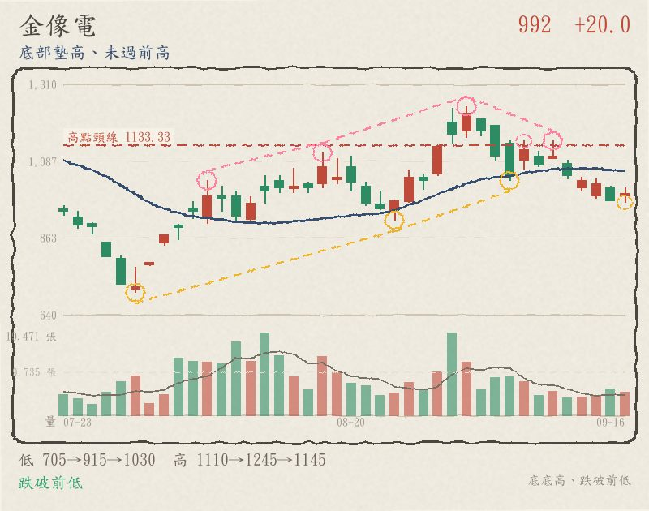
轉折低點 705、915、1030 遞增（底底高），但高點 1110、1245、1145 沒有同步創高，仍在區間內。收盤 992 跌破前一個轉折低點，頸線 1245 還在更上方（-20.3%）。收盤在月線 1058.65 之下。外資賣超 349 張、投信賣超 260 張。最近的轉折：近 3 日最高 1035 還沒過前 3 日高點 1145、最低 966 反而跌破前 3 日低點 1000。最近 3 個交易日收盤 09-14 1020 → 09-15 972 → 09-16 992。還沒確認的轉折低點 09-16 966（圖上虛線小圈）。還沒確認的轉折高點 09-07 1145（圖上虛線小圈）。量比 0.71（1 為與 20 日均量相當）。
↑ 回上方清單
區間或轉弱 成交金額 50.31 億・全榜第 43 名（上市第 32 名）
好條件 1/8：相對大盤強
不好條件 3/8：在月線之下、外資賣超、月線下彎
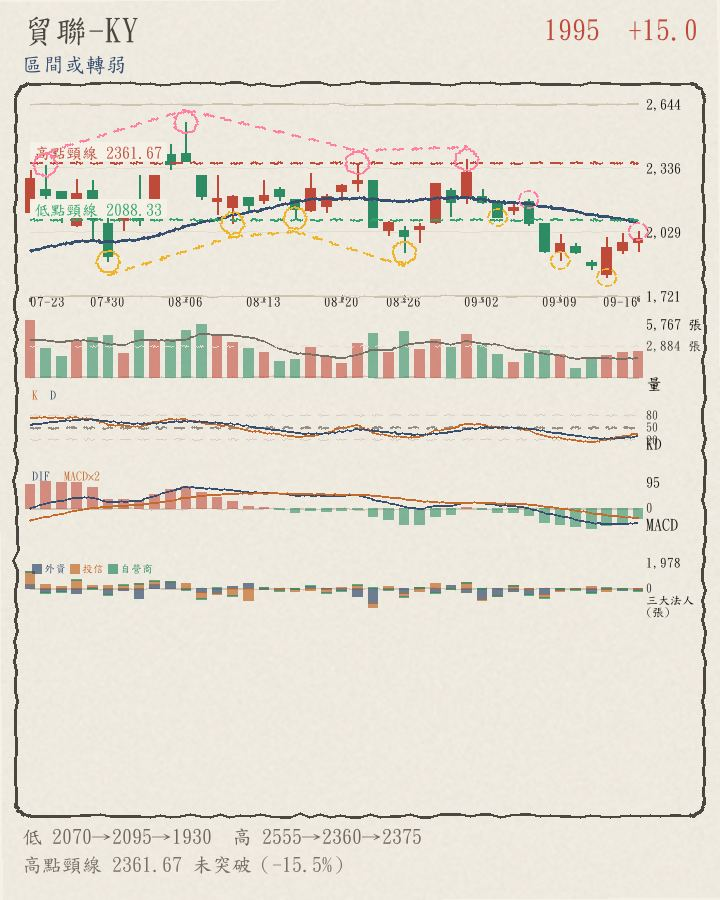
低點 2070、2095、1930 與高點 2555、2360、2375 都沒有明顯遞增，屬於區間震盪或轉弱。頸線 2360（2026-08-21），收盤 1995 尚未突破，距離 -15.5%。收盤在月線 2079.25 之下。外資賣超 251 張、投信買超 10 張。最近的轉折：近 3 日最高 2030 已越過前 3 日高點 2015、最低 1810 反而跌破前 3 日低點 1850。最近 3 個交易日收盤 09-14 1955 → 09-15 1980 → 09-16 1995。還沒確認的轉折低點 09-09 1890、09-14 1810（圖上虛線小圈）。還沒確認的轉折高點 09-07 2185、09-16 2030（圖上虛線小圈）。量比 0.94（1 為與 20 日均量相當）。
↑ 回上方清單
高點墊高、底部不穩 成交金額 49.58 億・全榜第 44 名（上市第 33 名）
好條件 6/8：站上月線、月線向上、頭頭高、突破頸線、相對大盤強、外資買超
不好條件 0/8：無
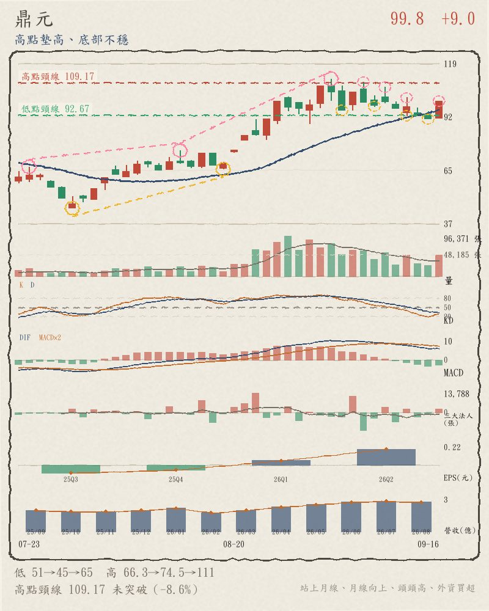
轉折高點 66.3、74.5、111 遞增（頭頭高），但低點 50.6、45.3、65.2 沒有同步墊高，底部結構不穩。收盤 99.8 已站上頸線 74.5（+34.0%），算是突破頸線。收盤在月線 95.27 之上。外資買超 2,443 張。最近的轉折：近 3 日最高 99.8 還沒過前 3 日高點 107、最低 90.6 反而跌破前 3 日低點 92.4。最近 3 個交易日收盤 09-14 93.3 → 09-15 90.8 → 09-16 99.8。還沒確認的轉折低點 09-11 92.4、09-15 90.6（圖上虛線小圈）。還沒確認的轉折高點 09-11 101.5、09-16 99.8（圖上虛線小圈）。量比 0.95（1 為與 20 日均量相當）。
↑ 回上方清單
區間或轉弱 成交金額 48.81 億・全榜第 46 名（上市第 34 名）
好條件 0/8：無
不好條件 4/8：相對大盤弱、在月線之下、外資賣超、月線下彎
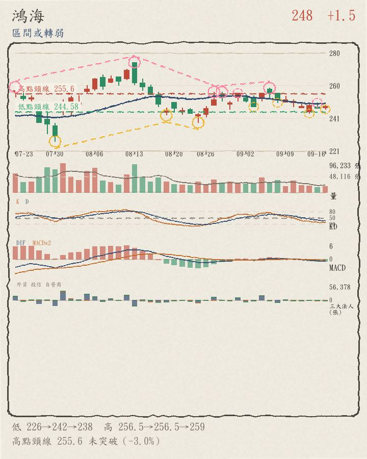
低點 226.5、242.5、238 與高點 256.5、256.5、259 都沒有明顯遞增，屬於區間震盪或轉弱。頸線 259（2026-09-07），收盤 248 尚未突破，距離 -4.2%。收盤在月線 249.6 之下。外資賣超 1,688 張、投信買超 1,282 張。最近的轉折：近 3 日最高 250 還沒過前 3 日高點 254、最低 243.5 反而跌破前 3 日低點 247。最近 3 個交易日收盤 09-14 248.5 → 09-15 246.5 → 09-16 248。還沒確認的轉折低點 09-14 243.5、09-16 246（圖上虛線小圈）。還沒確認的轉折高點 09-01 256、09-15 250（圖上虛線小圈）。量比 0.66（1 為與 20 日均量相當）。
↑ 回上方清單
底部墊高、未過前高 成交金額 47.76 億・全榜第 47 名（上市第 35 名）
好條件 4/8：站上月線、底底高、相對大盤強、外資買超
不好條件 1/8：月線下彎
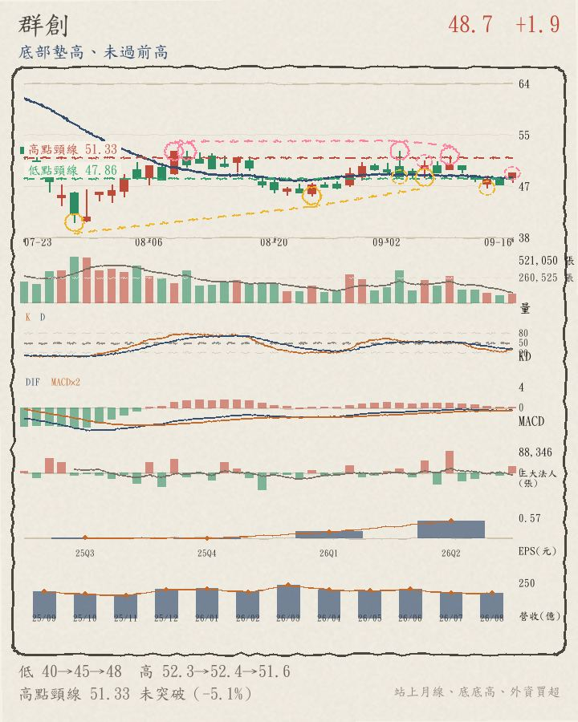
轉折低點 40.5、44.95、48 遞增（底底高），但高點 52.3、52.4、51.6 沒有同步創高，仍在區間內。頸線 52.4（2026-09-03），收盤 48.7 尚未突破，距離 -7.1%。收盤在月線 47.97 之上。外資買超 20,868 張、投信買超 3 張。最近的轉折：近 3 日最高 48.7 還沒過前 3 日高點 51.6、最低 46.25 反而跌破前 3 日低點 47.25。最近 3 個交易日收盤 09-14 47.65 → 09-15 46.8 → 09-16 48.7。還沒確認的轉折低點 09-03 48.1、09-14 46.25（圖上虛線小圈）。還沒確認的轉折高點 09-07 50.7、09-16 48.7（圖上虛線小圈）。量比 0.54（1 為與 20 日均量相當）。
↑ 回上方清單
高點墊高、底部不穩 成交金額 156.75 億・全榜第 7 名（上櫃第 1 名）
好條件 5/8：月線向上、頭頭高、突破頸線、相對大盤強、量價攻擊（收紅＋大量）
不好條件 2/8：在月線之下、外資賣超
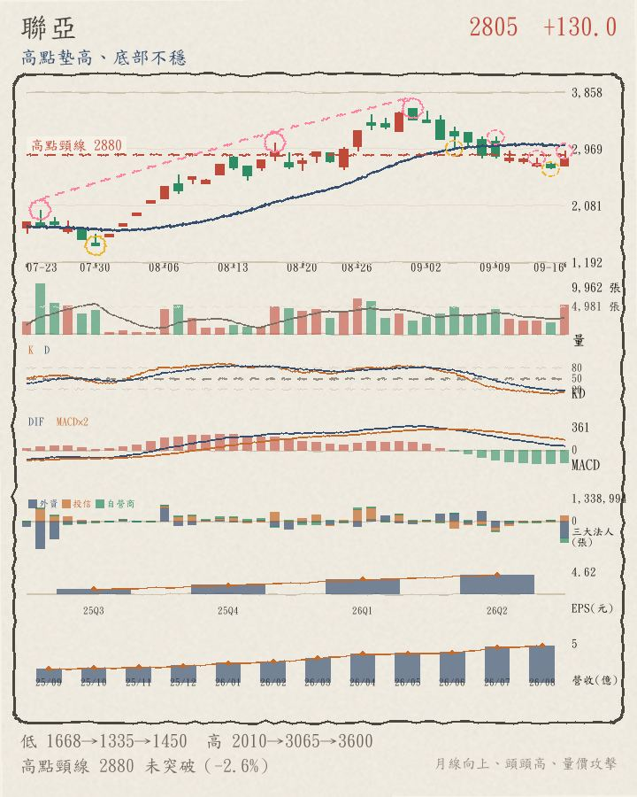
轉折高點 2010、3065、3600 遞增（頭頭高），但低點 1668.18、1335、1450 沒有同步墊高，底部結構不穩。收盤 2805 已站上頸線 2010（+39.6%），算是突破頸線。收盤在月線 3032.25 之下。外資（櫃買）賣超 1,410 張、投信買超 452 張。最近的轉折：近 3 日最高 2930 還沒過前 3 日高點 3150、最低 2650 反而跌破前 3 日低點 2735。最近 3 個交易日收盤 09-14 2745 → 09-15 2675 → 09-16 2805。還沒確認的轉折低點 09-04 2980、09-15 2650（圖上虛線小圈）。還沒確認的轉折高點 09-14 2830、09-16 2930（圖上虛線小圈）。量比 1.45（1 為與 20 日均量相當）。
↑ 回上方清單
區間或轉弱 成交金額 134.1 億・全榜第 11 名（上櫃第 2 名）
好條件 5/8：站上月線、月線向上、相對大盤強、外資買超、量價攻擊（收紅＋大量）
不好條件 0/8：無
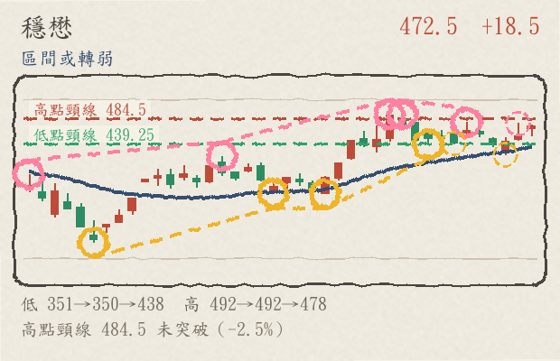
低點 351、349.5、438.5 與高點 492、492、478 都沒有明顯遞增，屬於區間震盪或轉弱。頸線 492（2026-09-01），收盤 472.5 尚未突破，距離 -4.0%。收盤在月線 435.3 之上。外資（櫃買）買超 410 張、投信買超 26 張。最近的轉折：近 3 日最高 476 還沒過前 3 日高點 478、最低 420 反而跌破前 3 日低點 435。最近 3 個交易日收盤 09-14 444 → 09-15 454 → 09-16 472.5。還沒確認的轉折低點 09-08 440、09-14 420（圖上虛線小圈）。還沒確認的轉折高點 09-15 476（圖上虛線小圈）。量比 1.04（1 為與 20 日均量相當）。
↑ 回上方清單
區間或轉弱 成交金額 130.52 億・全榜第 12 名（上櫃第 3 名）
好條件 5/8：站上月線、月線向上、突破頸線、相對大盤強、量價攻擊（收紅＋大量）
不好條件 1/8：外資賣超
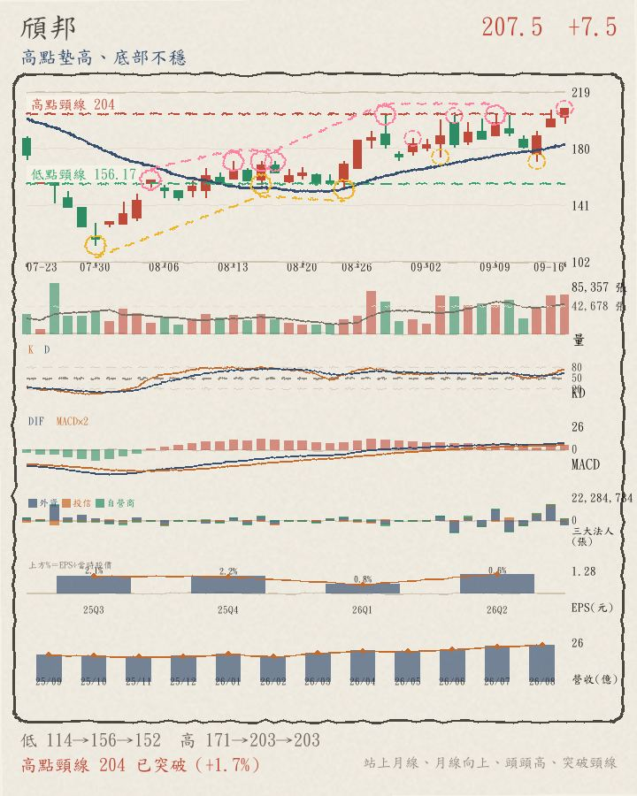
低點 113.5、155.5、152 與高點 171、203、203 都沒有明顯遞增，屬於區間震盪或轉弱。收盤 207.5 已站上頸線 171（+21.3%），算是突破頸線。收盤在月線 182.9 之上。外資（櫃買）賣超 5,731 張、投信買超 2,233 張。最近的轉折：近 3 日最高 207.5 已越過前 3 日高點 203、最低 171 反而跌破前 3 日低點 180。最近 3 個交易日收盤 09-14 189 → 09-15 200 → 09-16 207.5。還沒確認的轉折低點 09-03 174、09-14 171（圖上虛線小圈）。還沒確認的轉折高點 09-04 202.5、09-16 207.5（圖上虛線小圈）。量比 1.72（1 為與 20 日均量相當）。
↑ 回上方清單
底部墊高、未過前高 成交金額 98.81 億・全榜第 19 名（上櫃第 4 名）
好條件 6/8：站上月線、月線向上、底底高、相對大盤強、外資買超、量價攻擊（收紅＋大量）
不好條件 0/8：無
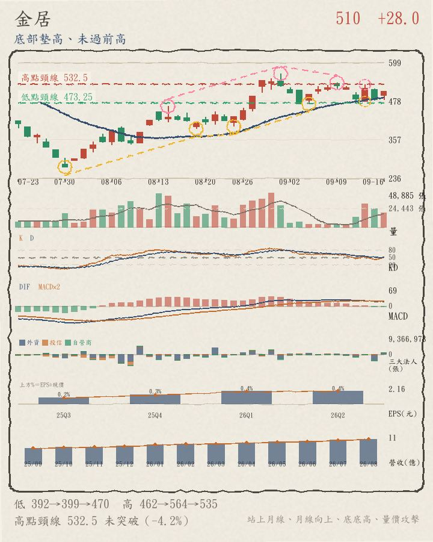
轉折低點 392、399、469.5 遞增（底底高），但高點 462、564、535 沒有同步創高，仍在區間內。頸線 564（2026-09-01），收盤 510 尚未突破，距離 -9.6%。收盤在月線 489.9 之上。外資（櫃買）買超 1,262 張、投信買超 5 張。最近的轉折：近 3 日最高 530 還沒過前 3 日高點 535、最低 477 反而跌破前 3 日低點 480.5。最近 3 個交易日收盤 09-14 518 → 09-15 482 → 09-16 510。還沒確認的轉折低點 09-14 477（圖上虛線小圈）。還沒確認的轉折高點 09-14 530（圖上虛線小圈）。量比 1.06（1 為與 20 日均量相當）。
↑ 回上方清單
區間或轉弱 成交金額 96.74 億・全榜第 20 名（上櫃第 5 名）
好條件 3/8：相對大盤強、外資買超、量價攻擊（收紅＋大量）
不好條件 2/8：在月線之下、月線下彎
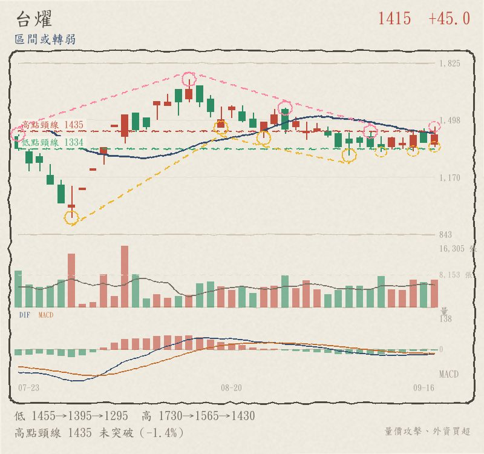
低點 1455、1395、1295 與高點 1730、1565、1430 都沒有明顯遞增，屬於區間震盪或轉弱。頸線 1565（2026-08-27），收盤 1415 尚未突破，距離 -9.6%。收盤在月線 1424.75 之下。外資（櫃買）買超 400 張、投信賣超 318 張。最近的轉折：近 3 日最高 1460 已越過前 3 日高點 1405、最低 1320 也墊高（前 3 日 1315）。最近 3 個交易日收盤 09-14 1410 → 09-15 1370 → 09-16 1415。還沒確認的轉折低點 09-14 1320、09-16 1345（圖上虛線小圈）。還沒確認的轉折高點 09-16 1460（圖上虛線小圈）。量比 1.31（1 為與 20 日均量相當）。
↑ 回上方清單
上升趨勢（底底高＋頭頭高） 成交金額 85.49 億・全榜第 26 名（上櫃第 6 名）
好條件 8/8：站上月線、月線向上、底底高、頭頭高、突破頸線、相對大盤強、外資買超、量價攻擊（收紅＋大量）
不好條件 0/8：無
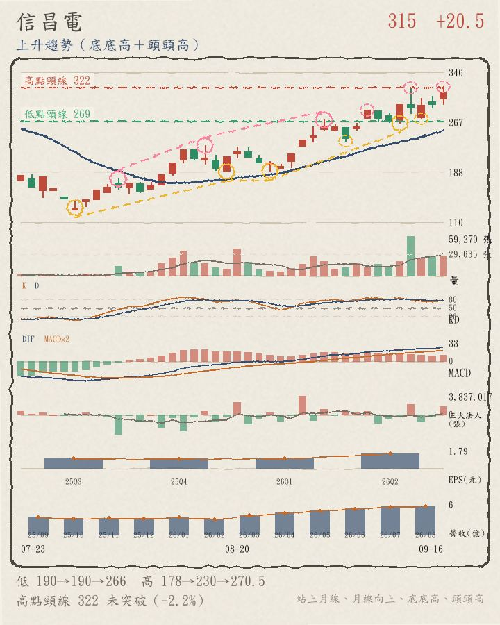
三個轉折低點 189.5、190.5、265.5 遞增，三個轉折高點 178、230、270.5 也遞增，屬於上升趨勢的骨架。收盤 315 已站上頸線 270.5（+16.5%），算是突破頸線。收盤在月線 254 之上。外資（櫃買）買超 1,073 張、投信買超 30 張。最近的轉折：近 3 日最高 323 已越過前 3 日高點 321、最低 272.5 也墊高（前 3 日 265.5）。最近 3 個交易日收盤 09-14 293.5 → 09-15 294.5 → 09-16 315。還沒確認的轉折低點 09-03 237.5、09-14 272.5（圖上虛線小圈）。還沒確認的轉折高點 09-11 321、09-16 323（圖上虛線小圈）。量比 1.46（1 為與 20 日均量相當）。
↑ 回上方清單
區間或轉弱 成交金額 62.32 億・全榜第 31 名（上櫃第 7 名）
好條件 4/8：站上月線、月線向上、相對大盤強、量價攻擊（收紅＋大量）
不好條件 1/8：外資賣超
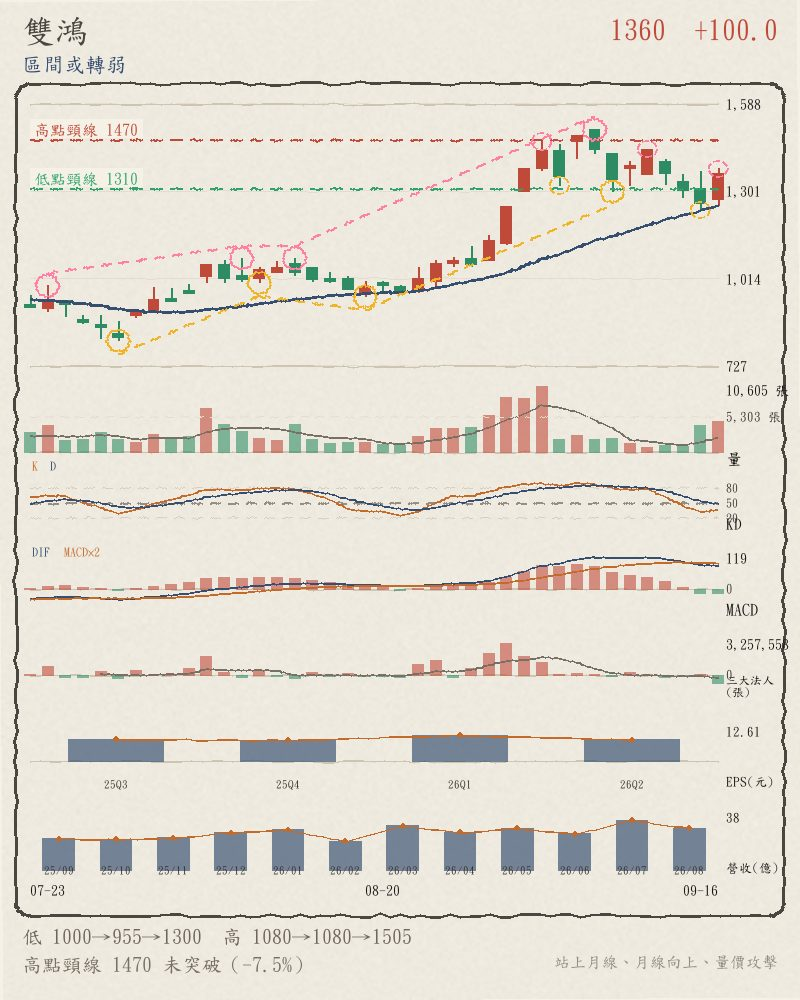
低點 1000、955、1300 與高點 1080、1080、1505 都沒有明顯遞增，屬於區間震盪或轉弱。頸線 1505（2026-09-07），收盤 1360 尚未突破，距離 -9.6%。收盤在月線 1255.1 之上。外資（櫃買）賣超 1,117 張、投信買超 1 張。最近的轉折：近 3 日最高 1375 還沒過前 3 日高點 1440、最低 1240 反而跌破前 3 日低點 1320。最近 3 個交易日收盤 09-14 1305 → 09-15 1260 → 09-16 1360。還沒確認的轉折低點 09-03 1320、09-15 1240（圖上虛線小圈）。還沒確認的轉折高點 09-10 1440、09-16 1375（圖上虛線小圈）。量比 1.41（1 為與 20 日均量相當）。
↑ 回上方清單
區間或轉弱 成交金額 59.81 億・全榜第 33 名（上櫃第 8 名）
好條件 1/8：相對大盤強
不好條件 3/8：在月線之下、外資賣超、月線下彎
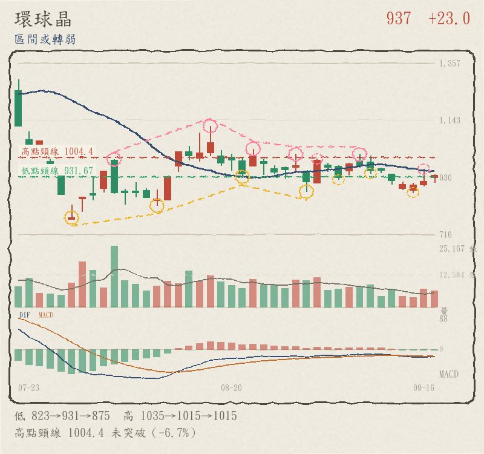
低點 823、931、875 與高點 1035、1015、1015 都沒有明顯遞增，屬於區間震盪或轉弱。頸線 1035（2026-08-24），收盤 937 尚未突破，距離 -9.5%。收盤在月線 951.75 之下。外資（櫃買）賣超 232 張、投信買超 68 張。最近的轉折：近 3 日最高 959 還沒過前 3 日高點 965、最低 872 反而跌破前 3 日低點 882。最近 3 個交易日收盤 09-14 900 → 09-15 914 → 09-16 937。還沒確認的轉折低點 09-08 944、09-14 872（圖上虛線小圈）。還沒確認的轉折高點 09-01 998、09-15 959（圖上虛線小圈）。量比 0.8（1 為與 20 日均量相當）。
↑ 回上方清單
底部墊高、未過前高 成交金額 54.81 億・全榜第 39 名（上櫃第 9 名）
好條件 3/8：底底高、相對大盤強、外資買超
不好條件 2/8：在月線之下、月線下彎
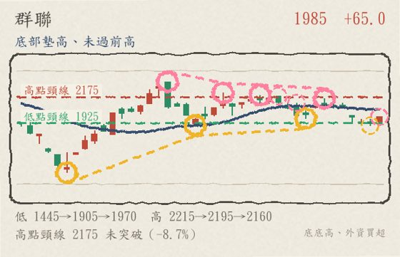
轉折低點 1445、1905、1970 遞增（底底高），但高點 2215、2195、2160 沒有同步創高，仍在區間內。頸線 2215（2026-08-24），收盤 1985 尚未突破，距離 -10.4%。收盤在月線 2062.5 之下。外資（櫃買）買超 320 張、投信買超 115 張。最近的轉折：近 3 日最高 1985 還沒過前 3 日高點 2125、最低 1900 反而跌破前 3 日低點 1920。最近 3 個交易日收盤 09-14 1935 → 09-15 1920 → 09-16 1985。還沒確認的轉折低點 09-15 1900（圖上虛線小圈）。還沒確認的轉折高點 09-03 2120、09-16 1985（圖上虛線小圈）。量比 0.78（1 為與 20 日均量相當）。
↑ 回上方清單
高點墊高、底部不穩 成交金額 54.07 億・全榜第 40 名（上櫃第 10 名）
好條件 5/8：站上月線、月線向上、頭頭高、突破頸線、相對大盤強
不好條件 1/8：外資賣超
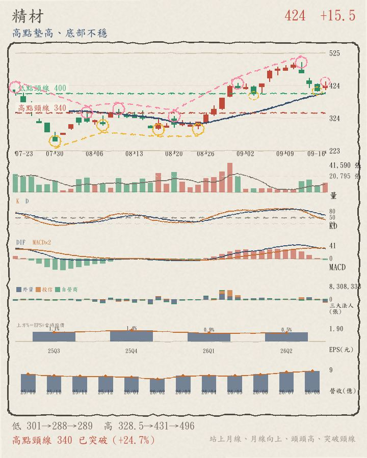
轉折高點 328.5、431、496 遞增（頭頭高），但低點 301、288、289 沒有同步墊高，底部結構不穩。收盤 424 已站上頸線 328.5（+29.1%），算是突破頸線。收盤在月線 401.2 之上。外資（櫃買）賣超 2,174 張、投信賣超 32 張。最近的轉折：近 3 日最高 447.5 還沒過前 3 日高點 496、最低 407 反而跌破前 3 日低點 463。最近 3 個交易日收盤 09-14 429.5 → 09-15 408.5 → 09-16 424。還沒確認的轉折低點 09-03 393、09-15 407（圖上虛線小圈）。還沒確認的轉折高點 09-16 436（圖上虛線小圈）。量比 0.97（1 為與 20 日均量相當）。
↑ 回上方清單
區間或轉弱 成交金額 51.04 億・全榜第 42 名（上櫃第 11 名）
好條件 4/8：站上月線、月線向上、突破頸線、相對大盤強
不好條件 1/8：外資賣超
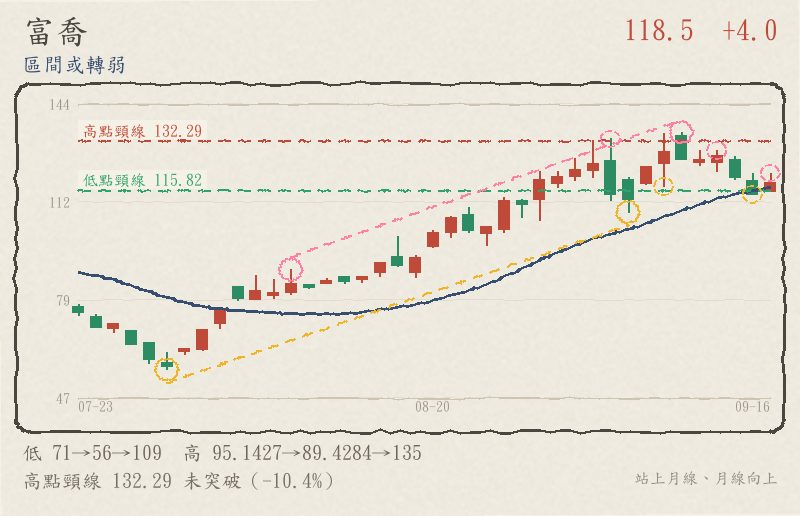
低點 70.857、56.2856、108.571 與高點 95.1427、89.4284、135 都沒有明顯遞增，屬於區間震盪或轉弱。收盤 118.5 已站上頸線 89.4284（+32.5%），算是突破頸線。收盤在月線 116.887 之上。外資（櫃買）賣超 4,510 張、投信買超 9 張。最近的轉折：近 3 日最高 127 還沒過前 3 日高點 135、最低 114.5 反而跌破前 3 日低點 122。最近 3 個交易日收盤 09-14 120 → 09-15 114.5 → 09-16 118.5。還沒確認的轉折低點 09-08 117.143、09-15 114.5（圖上虛線小圈）。還沒確認的轉折高點 09-11 129、09-16 121.5（圖上虛線小圈）。量比 0.52（1 為與 20 日均量相當）。
↑ 回上方清單
區間或轉弱 成交金額 49.18 億・全榜第 45 名（上櫃第 12 名）
好條件 3/8：站上月線、相對大盤強、外資買超
不好條件 1/8：月線下彎
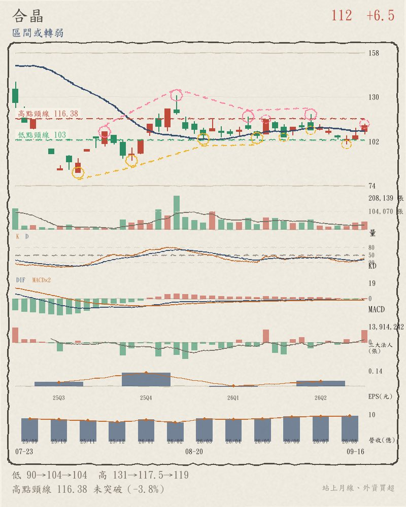
低點 89.8、103.5、104 與高點 131、117.5、119 都沒有明顯遞增，屬於區間震盪或轉弱。頸線 117.5（2026-08-28），收盤 112 尚未突破，距離 -4.7%。收盤在月線 108.6 之上。外資（櫃買）買超 10,126 張。最近的轉折：近 3 日最高 113 已越過前 3 日高點 112.5、最低 100 反而跌破前 3 日低點 103.5。最近 3 個交易日收盤 09-14 103.5 → 09-15 105.5 → 09-16 112。還沒確認的轉折低點 09-08 109、09-14 100（圖上虛線小圈）。還沒確認的轉折高點 09-01 116、09-16 113（圖上虛線小圈）。量比 0.95（1 為與 20 日均量相當）。
↑ 回上方清單
上升趨勢（底底高＋頭頭高） 成交金額 34.58 億・全榜第 48 名（上櫃第 13 名）
好條件 7/8：站上月線、月線向上、底底高、頭頭高、突破頸線、相對大盤強、外資買超
不好條件 0/8：無
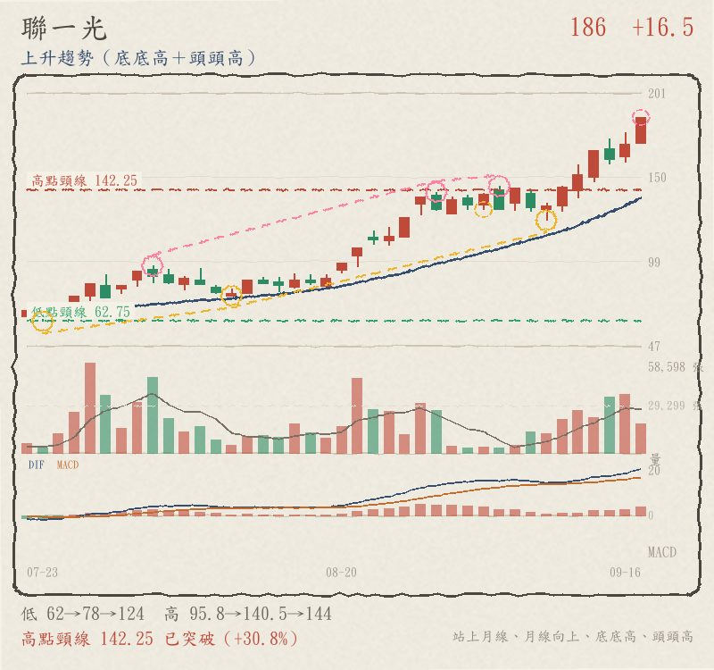
三個轉折低點 62.2、77.9、123.5 遞增，三個轉折高點 95.8、140.5、144 也遞增，屬於上升趨勢的骨架。收盤 186 已站上頸線 144（+29.2%），算是突破頸線。收盤在月線 137.215 之上。外資（櫃買）買超 68 張。最近的轉折：近 3 日最高 186 已越過前 3 日高點 166、最低 157.5 也墊高（前 3 日 129）。最近 3 個交易日收盤 09-14 160.5 → 09-15 169.5 → 09-16 186。還沒確認的轉折低點 09-02 130（圖上虛線小圈）。還沒確認的轉折高點 09-16 186（圖上虛線小圈）。量比 0.97（1 為與 20 日均量相當）。
↑ 回上方清單
高點墊高、底部不穩 成交金額 32.63 億・全榜第 49 名（上櫃第 14 名）
好條件 6/8：站上月線、月線向上、頭頭高、突破頸線、相對大盤強、量價攻擊（收紅＋大量）
不好條件 1/8：外資賣超
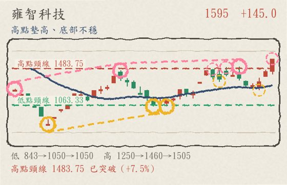
轉折高點 1250、1460、1505 遞增（頭頭高），但低點 843、1050、1050 沒有同步墊高，底部結構不穩。收盤 1595 已站上頸線 1505（+6.0%），算是突破頸線。收盤在月線 1295 之上。外資（櫃買）賣超 194 張、投信賣超 33 張。最近的轉折：近 3 日最高 1595 已越過前 3 日高點 1505、最低 1235 反而跌破前 3 日低點 1255。最近 3 個交易日收盤 09-14 1335 → 09-15 1450 → 09-16 1595。還沒確認的轉折低點 09-04 1335、09-14 1235（圖上虛線小圈）。還沒確認的轉折高點 09-07 1495、09-16 1595（圖上虛線小圈）。量比 2.55（1 為與 20 日均量相當）。
↑ 回上方清單
高點墊高、底部不穩 成交金額 29.56 億・全榜第 50 名（上櫃第 15 名）
好條件 4/8：站上月線、月線向上、頭頭高、相對大盤強
不好條件 0/8：無
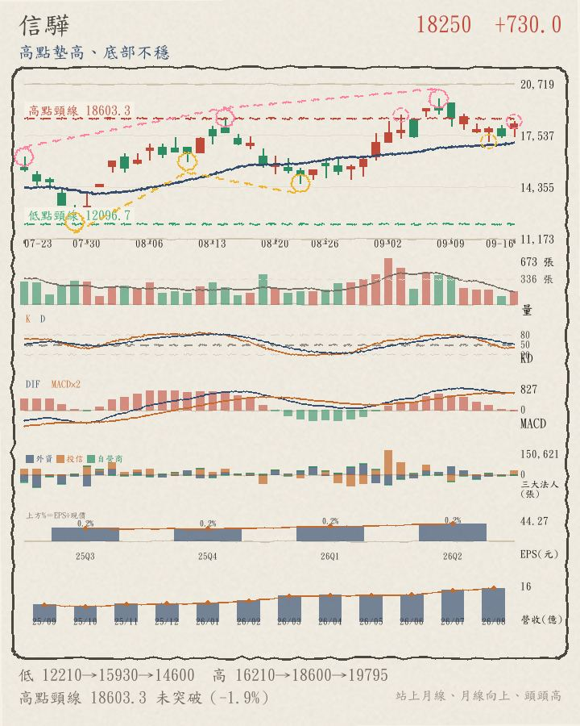
轉折高點 16210、18600、19795 遞增（頭頭高），但低點 12210、15930、14600 沒有同步墊高，底部結構不穩。頸線 18600（2026-08-14），收盤 18250 尚未突破，距離 -1.9%。收盤在月線 17092.2 之上。外資（櫃買）賣超 0 張、投信買超 41 張。最近的轉折：近 3 日最高 18420 還沒過前 3 日高點 19575、最低 17170 反而跌破前 3 日低點 17730。最近 3 個交易日收盤 09-14 17980 → 09-15 17520 → 09-16 18250。還沒確認的轉折低點 09-14 17170（圖上虛線小圈）。還沒確認的轉折高點 09-03 18790、09-16 18420（圖上虛線小圈）。量比 0.58（1 為與 20 日均量相當）。
↑ 回上方清單
← 回股市觀察